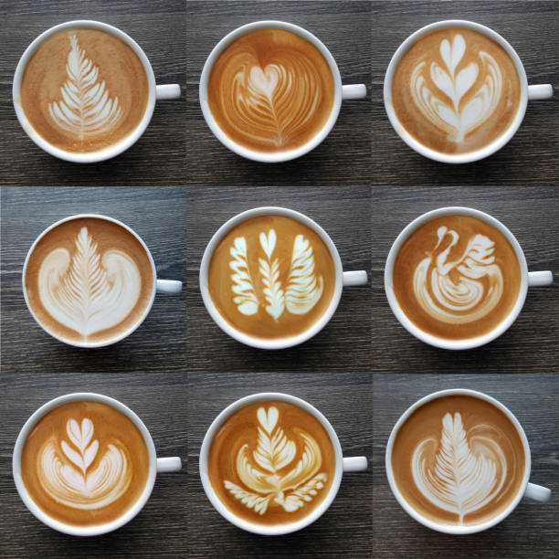
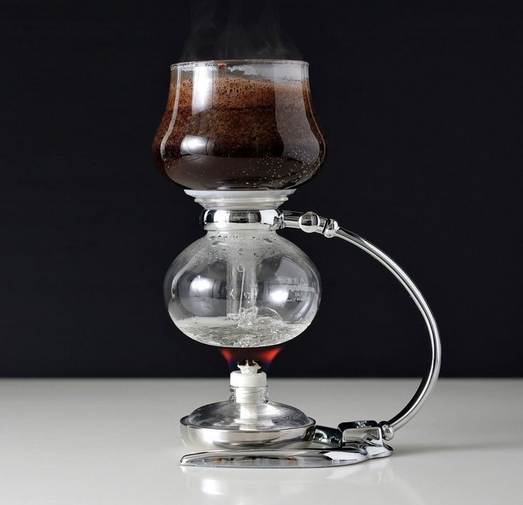
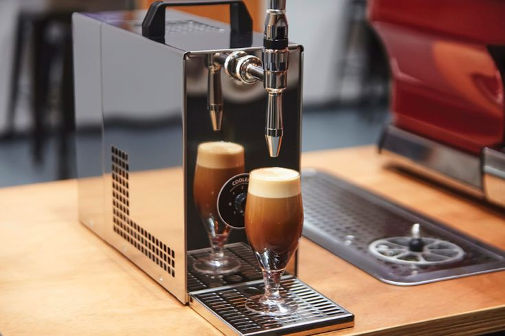
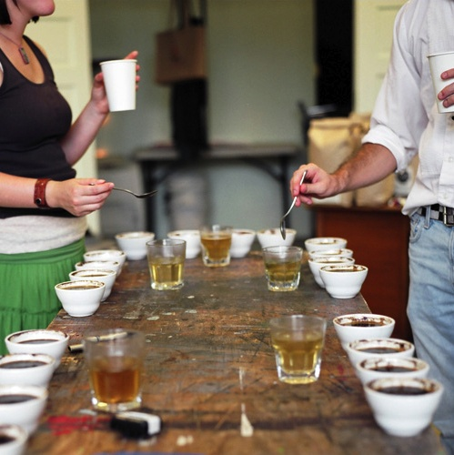

Explore advanced coffee-making techniques, including precision brewing, latte art, and expert tips to refine your craft.

Latte Art
Create stunning designs with steamed milk and espresso.
Steps:
- Steam milk to achieve a velvety microfoam.
- Pour milk into the espresso at a steady, controlled pace.
- Use wrist movements to create patterns like hearts, rosettas, or tulips.
Tips:
- Use whole milk for better foam stability.
- Practice pouring techniques with water before using milk.

Siphon Brewing
A theatrical brewing method using vacuum pressure for clarity and balance.
Steps:
- Heat water in the lower chamber until it rises to the upper chamber.
- Add medium-ground coffee to the upper chamber and stir gently.
- Let it brew for 1-2 minutes, then remove heat to allow coffee to return to the lower chamber.
Tips:
- Use a consistent heat source like a butane burner.
- Clean all components thoroughly after each use to maintain flavor integrity.
Coffee Cupping
A professional tasting method to evaluate coffee flavors and aromas.
Steps:
- Grind coffee to a coarse consistency and add 12g to a small bowl.
- Pour 200g of water (200°F) over the grounds and let steep for 4 minutes.
- Break the crust and smell the aromas, then slurp the coffee to evaluate flavors.
Tips:
- Use a consistent grind size and ratio for accurate comparisons.
- Keep notes on flavor, aroma, and aftertaste for each coffee.

Nitro Cold Brew
Infuse cold brew coffee with nitrogen gas for a creamy, foamy texture.
Steps:
- Brew a batch of cold brew coffee.
- Use a nitrogen infusion system to pressurize the coffee with nitrogen gas.
- Serve in a glass to enjoy the cascading foam effect.
Tips:
- Chill the coffee before nitrogen infusion for best results.
- Invest in a dedicated nitro brew system for convenience.

Temperature Control
Optimize water temperature for precise extraction and flavor.
Steps:
- Use a temperature-controlled kettle to maintain consistent heat.
- Brewing temperature should range between 195°F to 205°F.
- Adjust brewing temperature to highlight specific flavor notes in the coffee.
Tips:
- Use lower temperatures for lighter roasts to avoid bitterness.
- Experiment with small temperature changes to find your preferred taste.

Advanced Tasting
Train your palate to identify subtle coffee flavor notes.
Steps:
- Use a flavor wheel to guide your tasting process.
- Sample coffee at different temperatures to detect evolving flavors.
- Compare coffees side-by-side to identify differences in aroma and taste.
Tips:
- Keep a tasting journal to track your preferences.
- Focus on one sensory aspect (e.g., acidity, body) at a time.